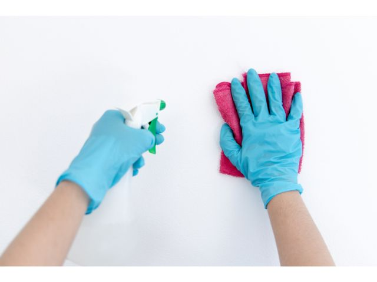
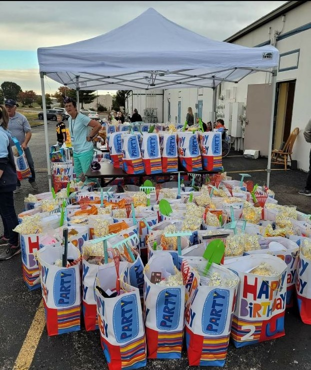
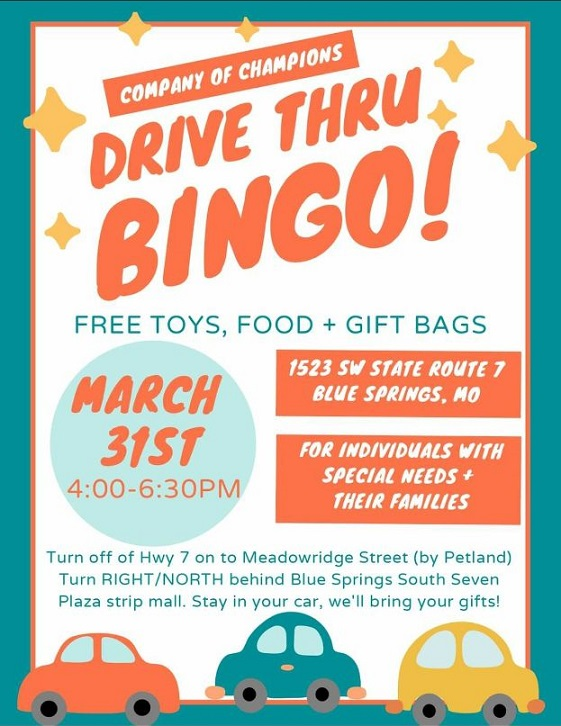

Church Cleaning
During the year from January 2018 through December 2018, my wife and I volunteered to clean a local church. We first got a list of local members and created groups of five families for each weekend in the year. We rotated through all the families trying to make sure that people that were more likely to respond and would come and participate were present each week. Each family was given four or five assignments for the whole year. We went almost every Saturday to meet with the families, instruct them on what needed to be cleaned and helped assign them to specific stations. Some of the cleaning responsibilities included restrooms, small classrooms, and the chapel which had long pews. During the year we got to know many people and it was exciting to work and serve beside them.
Delivery Food
 In the town where I live there are many families with special needs children. There is a lovely woman who organizes donations and contributions to provide care packages to these children and their families. My family has had the opportunity to go and help her deliver these packages to these families. The joy on the children is clearly visible and it is so rewarding to help people that have such a tremendous need. I also love that my children are able to see the example of serving and helping others because we are so blessed.
Data Design
When I first became a supervisor of the conversion team there were many processes that were inefficient and slow. We were converting data by importing into excel sheets, hand manipulating the results with macros and then exporting into delimited files. I was able to organize the team into groups that had projects to create automation of extracting the data into Microsoft SQL Server and then build scripts to manipulate the data in a structured format.

We could then take the middleware database we designed and load the data into multiple target projects. Our original conversions handled about 8 tables but after I finished working with the team and creating the new design, we were able to increase our convertible data over 200%! After restructuring and redesigning our conversions moved from a 3 day process to a 1 day process.